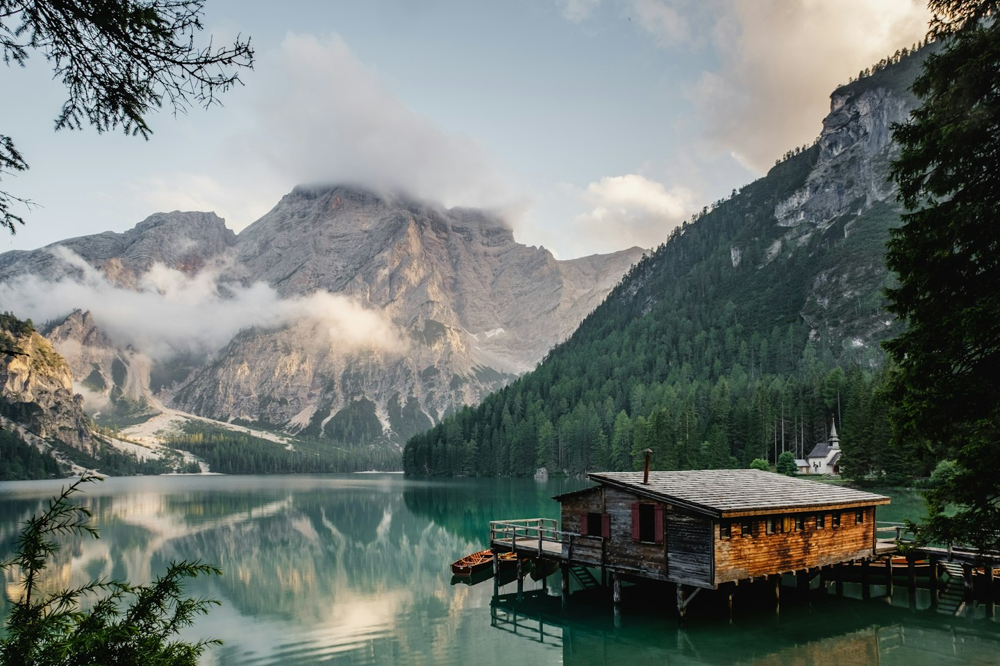
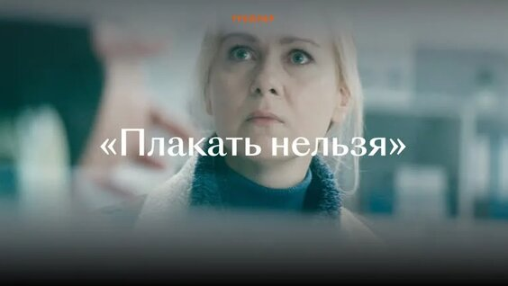

Ваш маленький
вечерний ритуал.
Оставьте шум дня снаружи.
Здесь только ваше видео и ваши люди.
Сначала —
короткий трейлер.
Настоящие видео из VK Видео и Rutube.
Выберите историю под настроение.

Автозапуск без звука. Включить звук можно в плеере.
Это примеры просмотра по ссылке. Комнаты с друзьями доступны отдельно по приглашению. Если плеер недоступен, откройте видео на площадке.
Есть вещи,
которые лучше
смотреть вместе.
Длинное интервью. Видео из канала в Telegram. Тот самый ролик с YouTube, который хочется обсудить.
«Комната» — проект сервиса для совместного просмотра по ссылке. Мы собираем спокойное пространство с приватными комнатами, синхронизацией и разговором рядом.
Так может начаться
ваш следующий вечер.
Побудем здесь ещё немного
Пример видео · ваша компанияИнтерактивный пример интерфейса. Видео не воспроизводится.
Дверь пока
для приглашённых.
Сейчас собираем небольшой круг участников, чтобы проверить комнаты, видеоссылки и синхронизацию. Новых участников приглашает команда.
У меня есть приглашение
Откройте персональную ссылку, которую прислала команда Комната. На этом лендинге нет формы входа или регистрации.
Закрытое тестирование · только по приглашению
Перед тем,
как войти.
Что можно будет смотреть?
В закрытом тесте проверяем просмотр по ссылкам из YouTube, Telegram, VK Видео и других видеоплатформ. Доступность зависит от источника и доступа к оригиналу. Собственного каталога фильмов у Комната нет.
Почему нельзя зарегистрироваться?
Сервис проходит закрытое тестирование. Новых участников приглашает команда проекта. Публичной регистрации и активации кодов на этой странице нет.
Когда откроется сервис?
Дата общего запуска пока не объявлена. Сначала проверяем основной сценарий и собираем обратную связь участников.